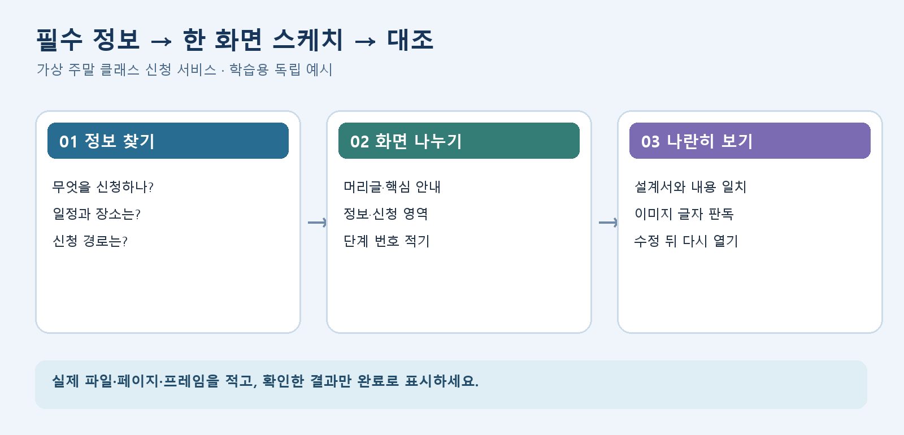

디자인 구성요소 설계 | C그룹
1. 시작하기: 기존 파일과 요구사항 확인
본인의 설계 방향 제안서, 화면 설계서, 와이어프레임을 엽니다. 파일이 없거나 그림의 글자를 읽기 어렵다면 그 상태를 먼저 기록하세요. 기존 파일을 다시 만들기 전에 브리프에서 필수 정보와 제외 조건을 표시합니다.
- 실제 파일 이름과 열리는 위치를 기록한다.
- 필수 콘텐츠와 신청 경로를 목록으로 만든다.
- 현재 화면에서 읽히지 않거나 빠진 항목에 표시한다.
아래 가상 '주말 클래스 신청' 예시는 연습용입니다. 본인의 과제에 없는 콘텐츠를 필수로 추가하지 않습니다.
디자인 구성요소 설계 | C그룹
2. 한 화면을 작은 부분으로 나눠 그리기
대표 화면 한 개를 선택하고 머리글, 핵심 안내, 세부 정보, 신청 영역, 바닥글 순서로 상자를 그립니다. 상자마다 전달할 정보 한두 개와 버튼의 목적을 먼저 적고 색상과 장식은 나중에 정합니다.
| 가상 화면 부분 | 확인할 내용 |
|---|
| 핵심 안내 | 무엇을 신청하는지 한 문장으로 보이는가 |
| 일정·장소 | 날짜와 장소가 실제 자료에서 확인된 정보인가 |
| 신청 영역 | 버튼을 누른 뒤 어디로 가는지 설명되는가 |

실습양식 01에 자신의 화면을 같은 방식으로 나눠 적습니다. 예시의 문구나 서비스 이름을 본인의 과제 답안으로 사용하지 마세요.
디자인 구성요소 설계 | C그룹
3. 설계서와 와이어프레임을 나란히 확인
설계서의 각 섹션 제목 옆에 대응하는 와이어프레임의 위치를 적습니다. 한쪽에만 있는 정보, 다른 색상·문구·순서, 빠진 신청 영역을 표시하고 한 건씩 고칩니다.
| 검사 | 통과 기준 |
|---|
| 내용 | 필수 문구와 정보가 두 파일에서 같은 뜻으로 보임 |
| 순서 | 단계 번호와 화면 순서가 일치함 |
| 판독 | 이미지로 내보낸 뒤에도 본문과 버튼 글자가 읽힘 |
PNG 이미지가 흐리면 원본 프레임의 글자 크기와 내보내기 크기를 점검하고, 저장한 파일을 실제로 다시 열어 확인합니다.
디자인 구성요소 설계 | C그룹
4. 버튼 한 개의 사용성과 수정 기록
대표 화면의 신청 버튼 하나를 고릅니다. 버튼의 기본 상태, 눌렀을 때의 결과, 입력이 잘못됐을 때의 안내를 간단한 화살표로 그립니다. Figma 프로토타입 기능을 쓰지 않아도 설계서에 흐름을 설명할 수 있습니다.
| 기록 칸 | 가상 예시 |
|---|
| 요청 또는 제안 | AI가 신청 버튼 문구를 '지금 시작'으로 제안 |
| 확인한 문제 | 무엇을 시작하는지 모호함 |
| 수정과 검수 | '클래스 신청하기'로 수정하고 화면과 설계서 문구 대조 |
실습양식 02에 자신의 실제 수정 한 건을 적고, 수정한 파일과 화면 위치를 기록합니다.
디자인 구성요소 설계 | C그룹
5. 완료 기준과 다음 학습
- 기존 파일을 모두 열어 실제 상태를 확인했다.
- 대표 화면 하나의 필수 내용과 신청 경로가 설계서·와이어프레임에서 일치한다.
- 글자와 단계 번호를 내보낸 파일에서도 읽을 수 있다.
- 수정한 한 건의 이유, 위치, 재확인 결과를 적었다.
한 화면을 맞춘 뒤 같은 방법으로 나머지 화면을 점검합니다. 다음 관련 수업에서 고친 전후 화면과 남은 질문을 함께 확인합니다.
디자인 구성요소 설계 | C그룹
6. 참고자료와 적용 활동
한국어 무료 공개 자료입니다. 안내한 범위를 읽거나 보고 자신의 결과물에 적용하세요.
Figma Learn
Figma Design의 프레임
학습 범위: 프레임 만들기와 화면 크기 사전 설정
읽고 할 일: 기존 프레임을 열어 한 화면의 구역을 나누기
Figma Learn
프로토타입 연결
학습 범위: 트리거·액션·목적지의 기본 설명
읽고 할 일: 신청 버튼 한 개를 누른 뒤의 이동 경로 적기
MDN Web Docs
웹 컨텐츠 접근성 지침 이해하기
학습 범위: 4대 원칙의 인식의 용이성·운용의 용이성 설명
읽고 할 일: 내보낸 화면의 글자와 버튼을 실제로 읽고 점검하기